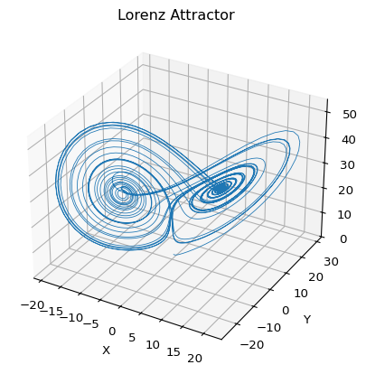

Lorenz Attractor
Module 1: Low-Dimensional Dynamics
Optional extension
This page and Sensitivity and Chaos are extra material, not part of the syllabus sessions. They extend the planar systems of Session 7 to three dimensions, where the Poincaré-Bendixson theorem no longer applies and chaos becomes possible (Strogatz 2024, chap. 9).
The Lorenz system is one of the standard examples where a smooth deterministic ODE produces irregular long-term behavior (Lorenz 1963; Strogatz 2024).
\[ \begin{aligned} \dot x &= s (y - x), \\ \dot y &= r x - y - x z, \\ \dot z &= x y - b z. \end{aligned} \tag{1}\]
For the classical Lorenz attractor, the standard parameter choice is
\[ s = 10, \qquad r = 28, \qquad b = \frac{8}{3}. \]
From ODEs to chaos
The earlier sessions studied phase portraits, fixed points and oscillations. The Lorenz system keeps the same ingredients, a deterministic vector field and a time-stepping scheme, but adds a new phenomenon:
- trajectories remain bounded;
- the system is fully deterministic;
- long-term prediction still becomes difficult because nearby initial conditions diverge.
This is the core idea behind deterministic chaos.
Note
The Lorenz attractor is bounded but not periodic. A trajectory keeps moving forever without settling into a fixed point or a simple closed orbit.
Implement the vector field
The right-hand side takes one point \((x,y,z)\) and returns the instantaneous velocity in phase space.
Exercise
Complete the Lorenz vector field Equation 1.
def lorenz(xyz, s=10.0, r=28.0, b=8.0 / 3.0):
x, y, z = xyz
x_dot = # TODO
y_dot = # TODO
z_dot = # TODO
return np.array([x_dot, y_dot, z_dot])
Solution
def lorenz(xyz, s=10.0, r=28.0, b=8.0 / 3.0):
x, y, z = xyz
x_dot = s * (y - x)
y_dot = r * x - y - x * z
z_dot = x * y - b * z
return np.array([x_dot, y_dot, z_dot])Fixed points
Setting the right-hand side equal to zero gives the equilibrium points.
For \(r > 1\), the Lorenz system has three fixed points (Strogatz 2024, sec. 9.2):
\[ (0,0,0), \qquad \left(\sqrt{b(r-1)}, \sqrt{b(r-1)}, r-1\right), \qquad \left(-\sqrt{b(r-1)}, -\sqrt{b(r-1)}, r-1\right). \]
For \(s = 10\), \(b = 8/3\) the two nonzero fixed points lose stability in a subcritical Hopf bifurcation at \(r = s(s + b + 3)/(s - b - 1) \approx 24.74\) (Strogatz 2024, sec. 9.2). At \(r = 28\) no fixed point is stable, and trajectories keep circling around the two lobes of the attractor.
Simulate with Euler
Forward Euler updates the state by
\[ \mathbf{x}_{n+1} = \mathbf{x}_n + \Delta t\, f(\mathbf{x}_n). \]
In code, that becomes a simple loop over time steps. Euler is only first-order accurate. It is used here because it is simple enough that you see how time stepping turns a continuous ODE into a computable trajectory. Use solve_ivp for quantitative work.
def simulate_lorenz(initial_state=(0.0, 1.0, 1.05), dt=0.01, num_steps=10000):
xyzs = np.empty((num_steps + 1, 3))
xyzs[0] = initial_state
for i in range(num_steps):
xyzs[i + 1] = xyzs[i] + lorenz(xyzs[i]) * dt
return xyzsWhat to look for
- The trajectory stays in a bounded region of phase space.
- It alternates between two lobes instead of converging to one point.
- The geometry looks structured, but the switching times are hard to predict over long intervals.
Exercise
Change \(r\) to 0.5, 10, 20 and 28, keeping \(s = 10\), \(b = 8/3\) and the initial condition \((0, 1, 1.05)\). Where does the trajectory end up? Then change the initial condition at \(r = 28\).
Solution
For \(r = 0.5 < 1\) the origin is the only fixed point and the trajectory decays to it. For \(r = 10\) and \(r = 20\) it settles on one of the two nonzero fixed points \(\bigl(\pm\sqrt{b(r-1)}, \pm\sqrt{b(r-1)}, r-1\bigr)\). For \(r = 28\) it never settles and keeps switching between the lobes. A new initial condition at \(r = 28\) gives a different path on the same attractor.
from scipy.integrate import solve_ivp
def lorenz_rhs(t, u, r, s=10.0, b=8.0 / 3.0):
x, y, z = u
return [s * (y - x), r * x - y - x * z, x * y - b * z]
for r in [0.5, 10, 20, 28]:
end = solve_ivp(lorenz_rhs, (0, 200), [0.0, 1.0, 1.05], args=(r,), rtol=1e-9, atol=1e-12).y[:, -1]
c = np.sqrt(8 / 3 * (r - 1)) if r > 1 else 0.0
print(f"r = {r}: state at t = 200 = {np.round(end, 2)}, sqrt(b(r-1)) = {c:.2f}")r = 0.5: state at t = 200 = [ 0. -0. 0.], sqrt(b(r-1)) = 0.00
r = 10: state at t = 200 = [4.9 4.9 9. ], sqrt(b(r-1)) = 4.90
r = 20: state at t = 200 = [-7.12 -7.12 19. ], sqrt(b(r-1)) = 7.12
r = 28: state at t = 200 = [-3.22 -5.79 10.99], sqrt(b(r-1)) = 8.49Reference code: amlab/extra/lorenz_attractor.py.
Next
References
Lorenz, Edward N. 1963. “Deterministic Nonperiodic Flow.” Journal of the Atmospheric Sciences 20 (2): 130–41. https://doi.org/10.1175/1520-0469(1963)020<0130:DNF>2.0.CO;2.
Strogatz, Steven H. 2024. Nonlinear Dynamics and Chaos: With Applications to Physics, Biology, Chemistry, and Engineering. Chapman; Hall/CRC.